Moving molecules across membranes: transporters and pumps
Membranes and transport
Cell Biology (3MB001)
About this lecture
A lipid bilayer keeps almost everything out. Yet a cell must take up sugars, amino acids and ions, throw out waste and drugs, and keep the inside very different from the outside. Today: the proteins that move molecules across membranes, and where the energy comes from.
After this lecture you can:
predict which molecules cross a pure lipid bilayer, and explain why most others need a protein;
explain passive and active transport with ΔG, and why transporters saturate like enzymes;
describe the alternating-access mechanism and uniport, symport and antiport;
explain primary active transport (P-type, V-type and ABC pumps; the Na⁺/K⁺ pump) and secondary active transport driven by the Na⁺ gradient;
explain how an epithelium moves glucose from the gut to the blood, and how drugs act on transporters.
ELO 2 (membranes and transport).
The question: how does sugar get from your gut into your blood?
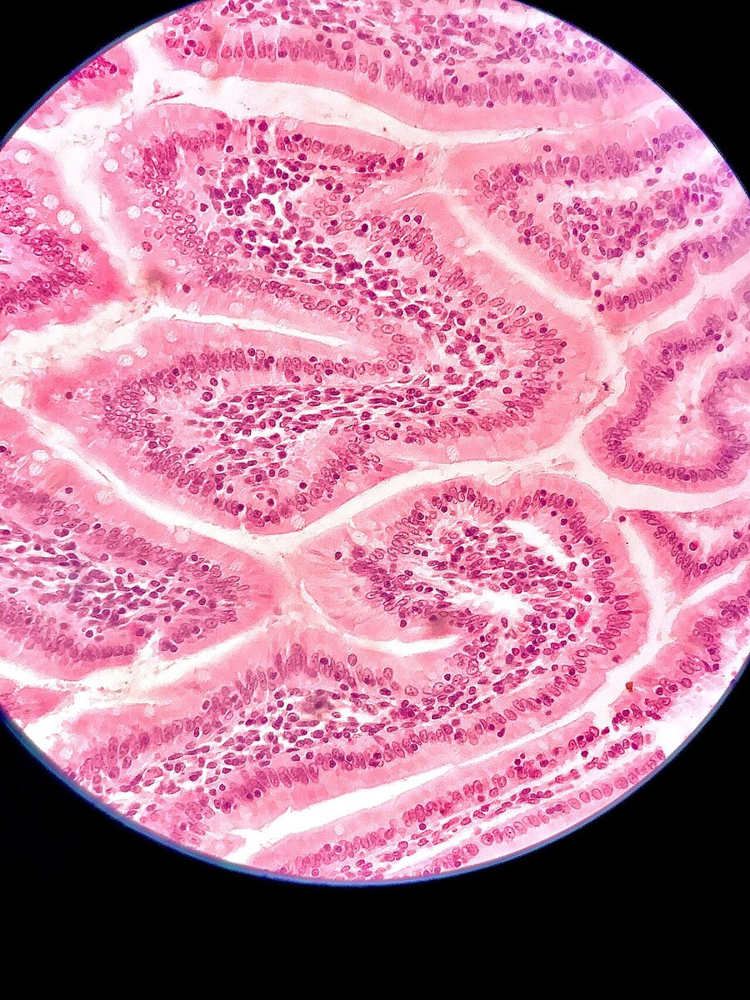
Small intestine (rat), stained section. The finger-like villi are covered by one layer of epithelial cells.
After a meal, the gut takes up hundreds of grams of glucose a day.
Glucose is polar: it barely crosses a lipid bilayer.
It must cross two membranes: into the epithelial cell from the gut, and out again on the blood side.
Between meals the cell still takes up glucose when the gut has less glucose than the blood: uphill.
And every one of your cells keeps Na⁺ low and K⁺ high inside, the opposite of the blood. A resting cell spends about a quarter of its ATP on this.
How, and why?
What crosses a pure lipid bilayer?
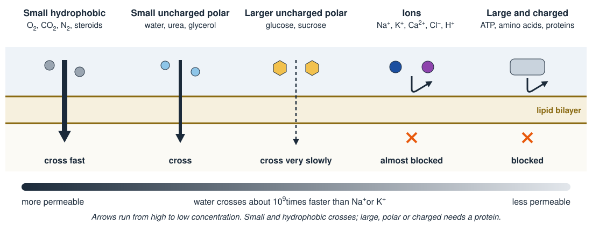
The middle of the bilayer is hydrophobic. A molecule must leave water and dissolve in oil to cross.
Small and hydrophobic (O₂, CO₂, steroid hormones, many drugs): fast. Small polar (water, urea): slower. Glucose: very slow. Ions: practically never, because they carry a charge and a shell of water.
So a cell needs membrane transport proteins: they make up about 15–30 % of the membrane proteins in a cell.
Inside is not like outside
Ion
Inside a mammalian cell (cytosol)
Outside (blood, tissue fluid)
Ratio
Na⁺
about 12 mM
about 145 mM
~10× higher outside
K⁺
about 140 mM
about 5 mM
~30× higher inside
Ca²⁺
about 0.0001 mM (100 nM)
about 2 mM
~10 000× higher outside
Cl⁻
about 5–15 mM
about 110 mM
~10× higher outside
H⁺
pH about 7.2
pH 7.4
Inside, the extra positive charge of K⁺ is balanced by negatively charged proteins, nucleic acids and metabolites that cannot leave.
These differences are not equilibrium. Ions leak all the time, and pumps work all the time to restore them. Stop the pumps and the gradients run down.
Gradients store energy, like water behind a dam. Cells use them to drive transport and to send electrical signals (the ion-channels lecture).
Recap: ΔG decides the direction
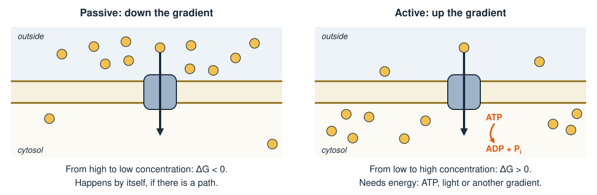
For an uncharged solute moving from outside to inside, at 37 °C:
\Delta G = RT \ln\frac{c_\text{in}}{c_\text{out}} \qquad (RT \approx 2.6\ \text{kJ/mol})
Passive transport: down the gradient, \Delta G < 0. A 10-fold gradient is worth about 5.9 kJ/mol.
Active transport: up the gradient, \Delta G > 0, so it must be coupled to a reaction with a larger negative ΔG. ATP hydrolysis in a cell gives about −50 kJ/mol.
For an ion, the membrane voltage adds an electrical term: the electrochemical gradient (the ion-channels lecture).
Two kinds of transport protein: transporters and channels
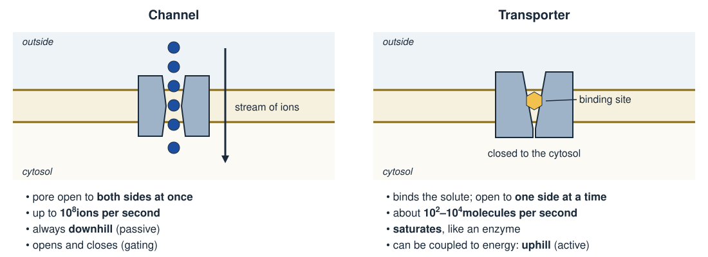
A channel is a gated hole: fast, but only downhill. A transporter (also called a carrier) binds its solute and changes shape: slower, but it can be coupled to energy and move things uphill.
How a transporter works: alternating access
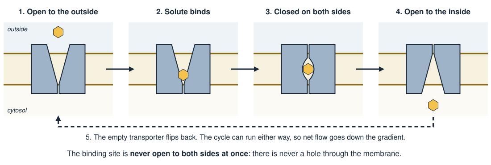
The binding site faces out, then in, never both at once.
One cycle can run in either direction. With no energy input, net flow goes down the gradient (passive).
Example: GLUT1, the glucose uniporter of red blood cells and the blood–brain barrier.
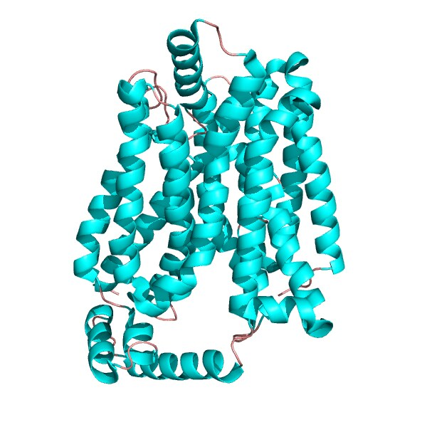
Human GLUT1 (PDB 4PYP), side view. Its 12 membrane helices form two halves (blue, red) around the sugar site.
How do we know? Uptake assays show that transporters saturate
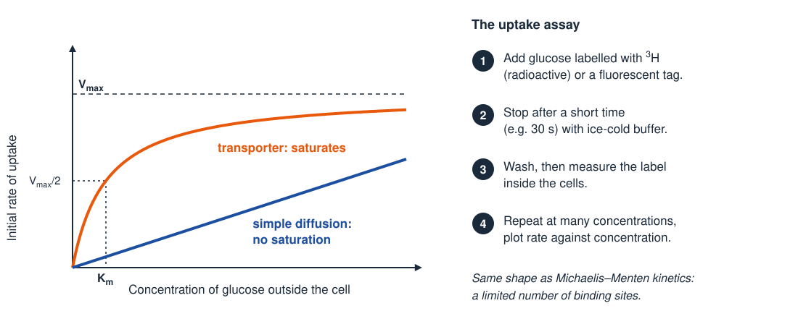
Diffusion through lipid rises linearly with concentration. Transport by a protein reaches a maximum (Vmax): all binding sites are busy. Km = concentration at half-maximal rate.
Transporters are specific: GLUT1 takes D-glucose, not its mirror image L-glucose. They can be competed by similar molecules and blocked by inhibitors.
Three ways to couple: uniport, symport, antiport
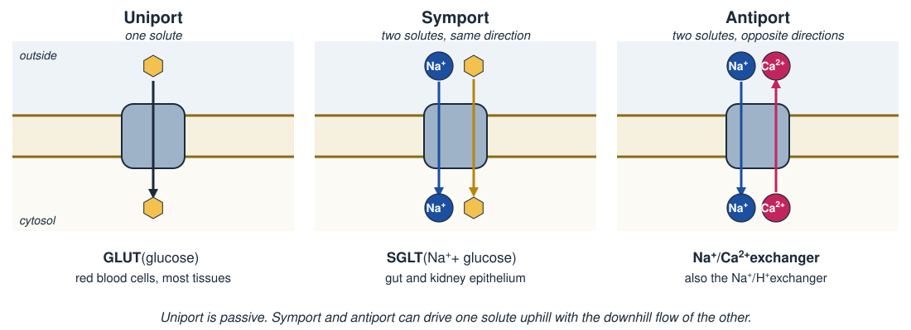
Uniport: one solute, passive (GLUT).
Symport (co-transport): two solutes cross in the same direction. Example: SGLT1 carries 2 Na⁺ + 1 glucose into gut cells.
Antiport (exchange): two solutes cross in opposite directions. Na⁺/Ca²⁺ exchanger: 3 Na⁺ in, 1 Ca²⁺ out. Na⁺/H⁺ exchanger: 1 Na⁺ in, 1 H⁺ out (controls cytosolic pH).
Secondary active transport: the Na⁺ gradient is a battery
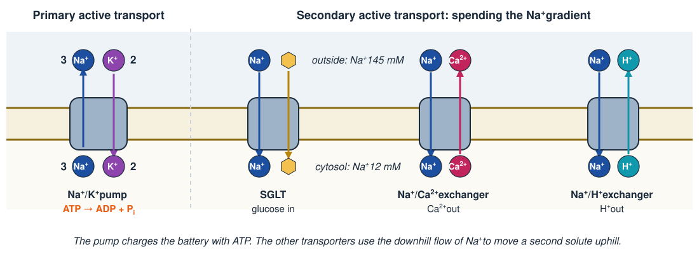
Primary active transport uses ATP directly (a pump). Secondary active transport uses a gradient that a pump made.
Na⁺ flowing in releases energy: about −13 kJ/mol (concentration plus voltage). With 2 Na⁺ per glucose, SGLT1 can in theory concentrate glucose more than 10 000-fold.
Animal cells use Na⁺; bacteria, plants and fungi mostly use an H⁺ gradient.
Primary active transport: the Na⁺/K⁺ pump
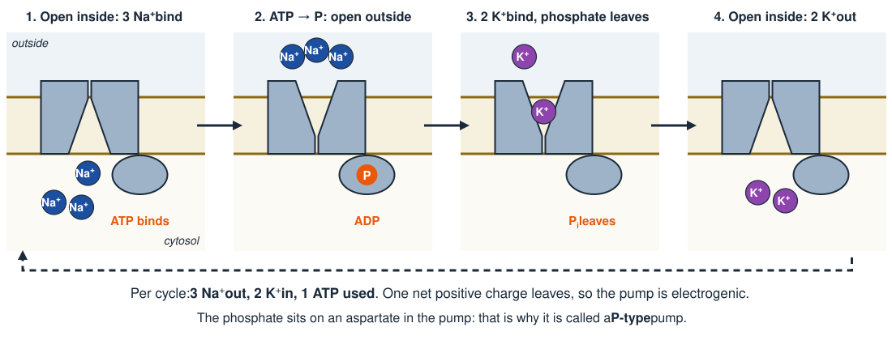
A P-type ATPase: it phosphorylates itself on an aspartate, and this switches its shape from inward-open to outward-open.
3 Na⁺ out, 2 K⁺ in per ATP. It uses about a quarter of a resting cell’s ATP, and much more in nerve cells.
Found in every animal cell. Discovered by Jens Skou in crab nerves in 1957 (Nobel Prize in Chemistry 1997).
How do we know? Rebuild the pump, and block it
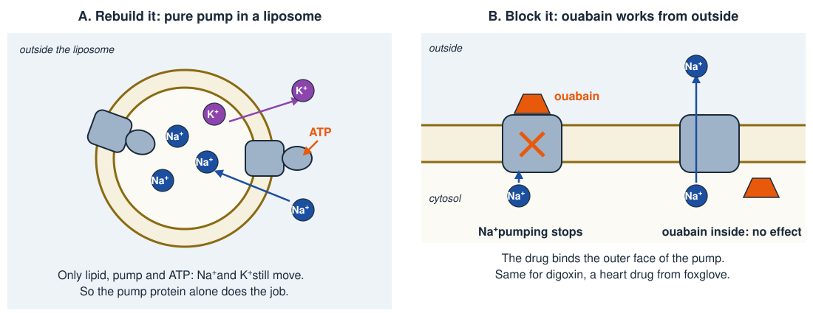
Reconstitution: purify the pump, put it into liposomes (artificial lipid vesicles), add ATP: Na⁺ and K⁺ move in a 3 : 2 ratio. No other protein is needed.
Inhibitors: ouabain (an arrow poison) and digoxin block the pump only from the outside. Resealed red-cell membranes (“ghosts”) showed that ATP and Na⁺ must be inside, K⁺ outside.
Other pumps: Ca²⁺ pumps, V-type and F-type
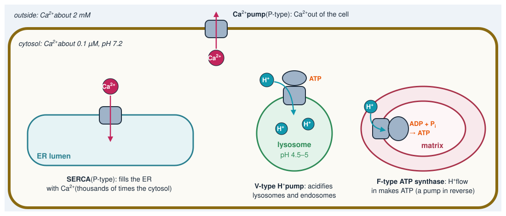
Ca²⁺ pumps (P-type) keep cytosolic Ca²⁺ at about 100 nM: out of the cell (PMCA) and into the ER (SERCA). A brief rise in Ca²⁺ is a signal (the signalling lectures).
V-type H⁺ pump acidifies lysosomes (pH 4.5–5), endosomes and secretory vesicles (the lysosome lecture).
F-type ATP synthase looks like a V-type pump but runs backwards: H⁺ flowing down its gradient makes ATP (the mitochondria lecture).
ABC transporters: ATP-powered exporters
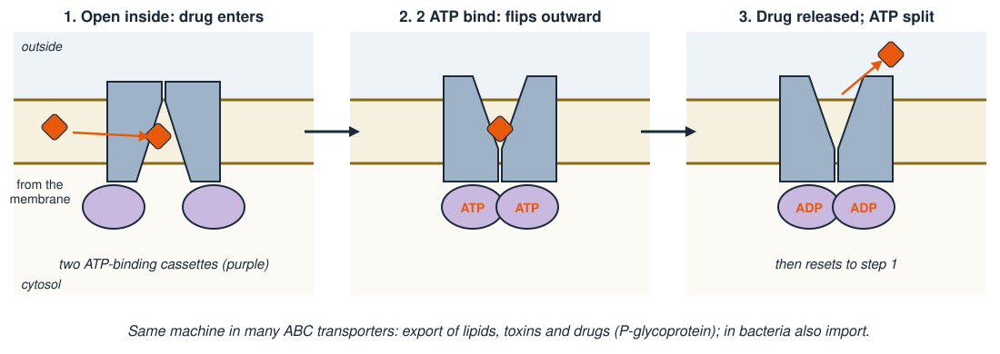
Two membrane halves plus two ATP-binding cassettes (hence “ABC”). ATP binding brings the cassettes together and flips the transporter to face outward; hydrolysis resets it.
The largest transporter family: humans have about 48 ABC genes. In our cells most are exporters: lipids, bile salts, toxins and drugs.
P-glycoprotein (ABCB1) pumps many different hydrophobic drugs out of cells. The CFTR chloride channel is an unusual member (the ion-channels lecture).
Transcellular transport: from gut to blood
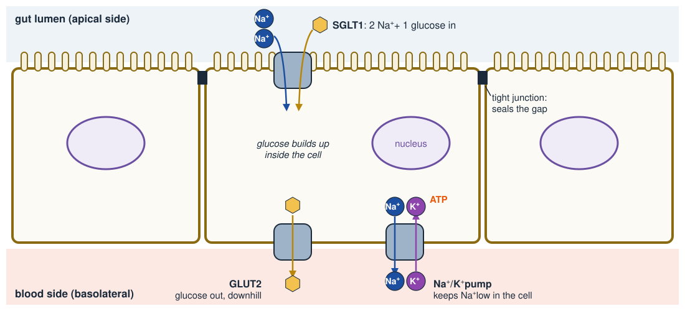
Apical (gut side): SGLT1 brings glucose in, uphill. Basolateral (blood side): GLUT2 lets it out, downhill; the Na⁺/K⁺ pump removes the Na⁺.
Tight junctions seal the gaps between cells and keep apical and basolateral proteins apart.
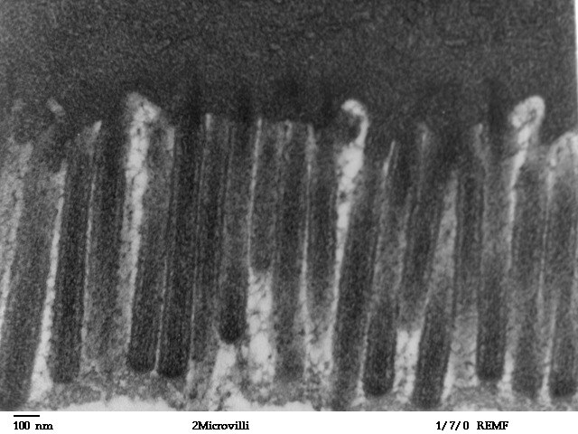
Microvilli on a human gut epithelial cell (TEM). Scale bar 100 nm. They enlarge the apical surface many times.
Water: aquaporins
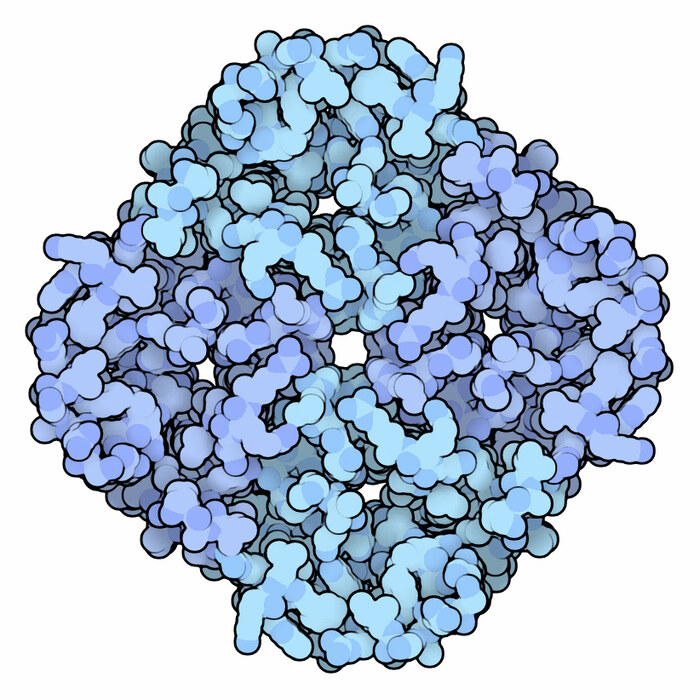
Aquaporin seen from outside the cell: four subunits, each with its own water pore (space-filling model, PDB 1FQY).
Water crosses lipid slowly. Kidney, red cells and glands need it fast.
Aquaporins are water channels: about a billion water molecules per second per pore, in single file.
They exclude ions, even H⁺, so they do not destroy gradients.
Water always moves passively, by osmosis: towards the side with more dissolved particles. Cells move water by moving solutes.
AQP2 in the kidney collecting duct is inserted into the membrane when the hormone vasopressin signals; this concentrates the urine. Peter Agre, Nobel Prize in Chemistry 2003.
Why it matters: SGLT2 inhibitors in diabetes and heart failure
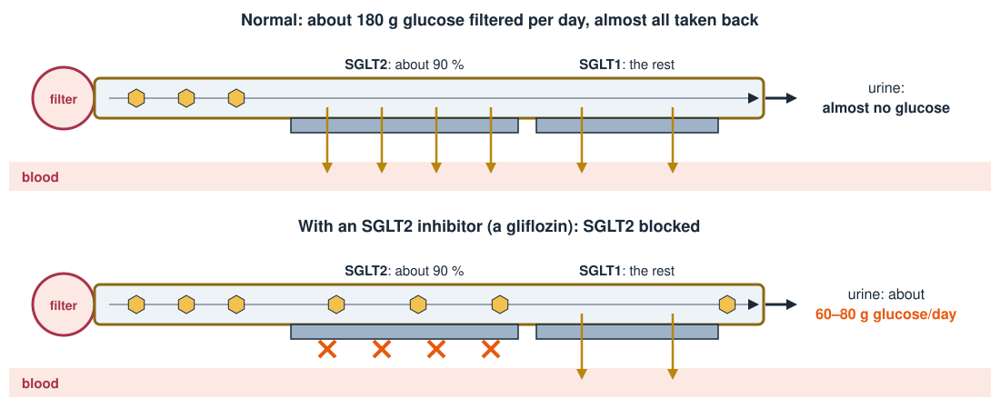
The kidneys filter about 180 g of glucose a day; SGLT2 in the proximal tubule takes back about 90 %, SGLT1 the rest. Above a blood glucose of about 10 mM the transporters saturate and glucose appears in urine.
Gliflozins (dapagliflozin, empagliflozin) block SGLT2: glucose and some Na⁺ leave in the urine, and blood glucose falls in type 2 diabetes.
In large trials they also reduced heart failure and slowed kidney disease, even in people without diabetes. Exactly why is still studied.
Why it matters: pumps as drug targets and drug barriers
Digoxin (from foxglove) blocks the Na⁺/K⁺ pump in heart muscle. Less Na⁺ gradient → the Na⁺/Ca²⁺ exchanger removes less Ca²⁺ → more Ca²⁺ → stronger contraction. Used in heart failure and atrial fibrillation; the safe dose range is narrow.
P-glycoprotein (ABCB1) pumps chemotherapy drugs out of cancer cells: multidrug resistance. In the gut, liver, kidney and blood–brain barrier it pumps drugs back out, which limits oral absorption and keeps many drugs out of the brain.
A tablet must cross the gut epithelium: by diffusion through lipid (small, lipophilic drugs) or on a transporter, while escaping P-glycoprotein. More in drug development (Kliniska prövningar och läkemedelsutveckling).
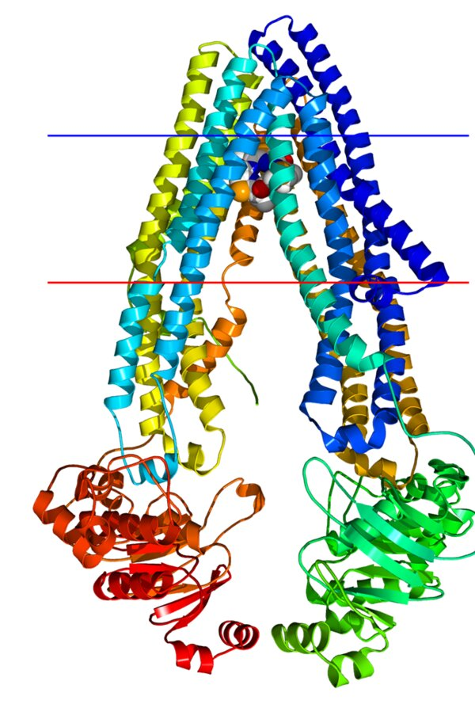
P-glycoprotein (mouse, PDB 3G5U). Lines: outer (blue) and inner (red) face of the membrane.
Foxglove, Digitalis. Its leaves contain digitalis glycosides.
Summary
A lipid bilayer lets small hydrophobic molecules through but blocks ions and most polar molecules; transport proteins give them a path.
Passive transport goes down the gradient (ΔG < 0); active transport goes up and must be coupled to ATP or to another gradient. Cells keep large, non-equilibrium gradients of Na⁺, K⁺ and Ca²⁺.
Channels are fast pores, always passive. Transporters bind their solute, work by alternating access, saturate like enzymes, and can be uniporters, symporters or antiporters.
Pumps use ATP directly: P-type (Na⁺/K⁺ pump, 3 Na⁺ out, 2 K⁺ in; Ca²⁺ pumps), V-type (acidify organelles), ABC (export, including drugs); the F-type ATP synthase runs in reverse. The Na⁺ gradient drives secondary active transport.
Epithelia move solutes across the cell with different transporters on the apical and basolateral sides; drugs such as gliflozins and digoxin act on transporters, and P-glycoprotein pumps drugs away.
Read more (optional): Alberts et al., Molecular Biology of the Cell, 7th ed., ch. 11.